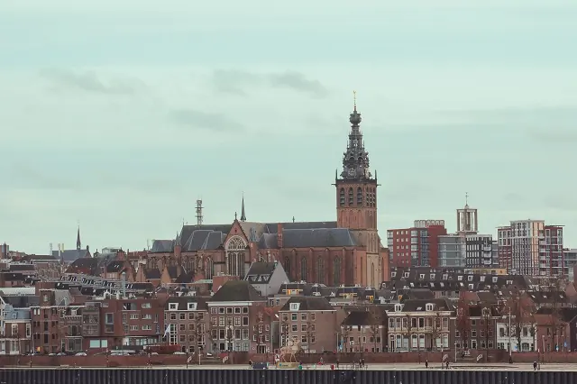

De Waalbrug in Nijmegen
Bijgewerkt op 3 november 2026.
De Waalbrug is het symbool van Nijmegen. De boogbrug uit 1936 verbindt de binnenstad met Lent, speelde een hoofdrol in september 1944 en is nog altijd een van de mooiste plekken om de stad en de rivier te zien. Hier lees je de feiten en de geschiedenis, en hoe je over de brug loopt of fietst.

De bouw
Tot 1936 stak je de Waal bij Nijmegen over met de veerpont; alleen de trein had sinds 1879 een eigen brug. Over de plek van een verkeersbrug werd jaren gesteggeld, onder meer omdat de benedenstad vreesde voor de gevolgen. In 1928 viel het besluit en in oktober 1931 begon de bouw, naar een ontwerp van architect Gerardus Schoorl. De brug kostte 5,5 miljoen gulden. In juni 1936 opende koningin Wilhelmina de brug: 604 meter lang, met een hoofdoverspanning van 244 meter, destijds de langste boogbrug van Europa. Voor de aanleg van de oprit werd het Hunnerpark gehalveerd.
De brug in de oorlog
Op 10 mei 1940, de eerste dag van de Duitse inval, bliezen Nederlandse genisten de brug op. De Duitsers herstelden haar; in 1943 ging ze weer open. In september 1944, tijdens operatie Market Garden, was de Waalbrug een van de belangrijkste doelen van de geallieerden. Op 20 september staken Amerikaanse parachutisten in canvasbootjes de Waal over om de brug van de noordkant aan te vallen, terwijl Britse tanks vanuit de stad kwamen. De brug viel vrijwel onbeschadigd in geallieerde handen. Het verhaal is wereldberoemd door het boek en de film A Bridge Too Far. Elke avond bij zonsondergang lopen veteranen de Sunset March over De Oversteek, de nieuwe brug stroomafwaarts, waar dan 48 paar lantaarns een voor een aangaan.
De brug nu
- Verkeer: over de brug rijden zo'n 50.000 voertuigen per dag. Sinds de opening van De Oversteek in 2013 is het rustiger.
- Kleur: de brug was oorspronkelijk groen en werd in 1980 lichtbeige geschilderd. Bij de grote renovatie van 2020 bleef het overschilderen achterwege, omdat de oude verf chroom-6 bevat.
- Spiegelwaal: in 2015 werd de brug aan de kant van Lent verlengd, zodat ze ook de nieuwe nevengeul overspant. Zie onze gids over Lent en de Spiegelwaal.
- Monument: de Waalbrug is een rijksmonument.
Over de brug lopen of fietsen
Aan beide kanten van de brug liggen fiets- en voetpaden. Vanaf het Valkhof loop je via het Hunnerpark de brug op; aan de overkant kom je uit in Lent, met het eiland Veur-Lent en de Spiegelwaal. Het mooiste rondje is heen over de Waalbrug en terug over de Snelbinder, de fietsbrug uit 2004 naast de spoorbrug. Wil je de brug zelf in beeld? Vanaf de Waalkade en vanaf het strand aan de Spiegelwaal heb je het beste zicht. Meer routes staan bij wandelen in Nijmegen en de beste fotospots.
Meer over de binnenstad lees je in onze gids Nijmegen centrum.
Meer in onze gids het centrum van Nijmegen.
Veelgestelde vragen
Wanneer is de Waalbrug gebouwd?
De bouw begon in oktober 1931 en koningin Wilhelmina opende de brug in juni 1936. Ze was toen de langste boogbrug van Europa.
Hoe lang is de Waalbrug?
604 meter, met een hoofdoverspanning van 244 meter.
Wat gebeurde er met de Waalbrug in de oorlog?
Op 10 mei 1940 bliezen Nederlandse genisten de brug op. De Duitsers herstelden haar, en in september 1944 veroverden de geallieerden de brug vrijwel onbeschadigd, na de oversteek van de Waal door Amerikaanse parachutisten.
Kun je over de Waalbrug lopen?
Ja, aan beide kanten liggen fiets- en voetpaden. Vanaf het Valkhof loop je via het Hunnerpark de brug op naar Lent.
Wat is het verschil tussen de Waalbrug en De Oversteek?
De Waalbrug uit 1936 ligt bij het centrum. De Oversteek uit 2013 ligt stroomafwaarts bij Nijmegen-West en is bekend van de Sunset March.